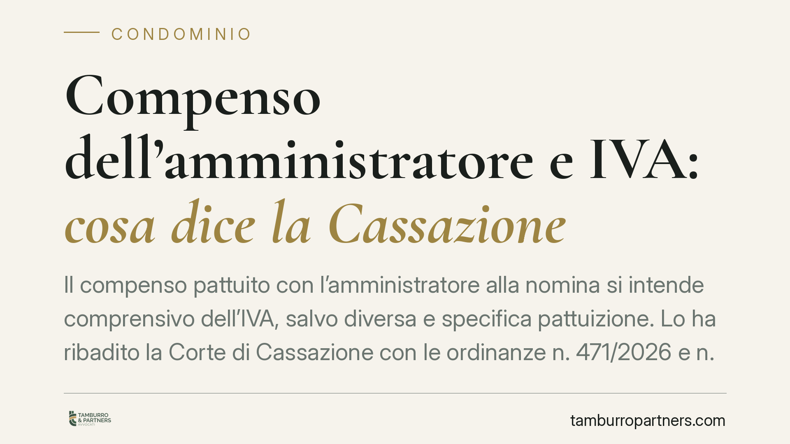

Compenso dell'amministratore e IVA: cosa dice la Cassazione
Il compenso pattuito con l'amministratore alla nomina si intende comprensivo dell'IVA, salvo diversa e specifica pattuizione. Lo ha ribadito la Corte di Cassazione con le ordinanze n. 471/2026 e n. 14428/2025, precisando anche che errori contabili di lieve entità non travolgono la delibera di approvazione del rendiconto. Due chiarimenti che incidono sui rapporti economici tra condominio e amministratore.

Il fatto
Due recenti pronunce della Corte di Cassazione toccano questioni ricorrenti nella gestione condominiale: la determinazione del compenso dell'amministratore e la validità della delibera che approva il rendiconto.
Sul primo punto, la Corte afferma che l'importo indicato all'atto della nomina deve considerarsi onnicomprensivo, cioè già inclusivo dell'IVA, quando l'amministratore ne sia soggetto passivo. Solo una pattuizione espressa e distinta consente di ritenere l'imposta aggiuntiva rispetto alla cifra deliberata.
Sul secondo, la Corte esclude che errori contabili di modesta entità siano sufficienti ad annullare la delibera di approvazione del rendiconto, in assenza di un vizio idoneo a incidere in modo sostanziale sulla correttezza della gestione.
Nota redazionale. Gli estremi indicati (Cass. ord. n. 471/2026 e n. 14428/2025) sono riportati sulla base della fonte di stampa. Se ne raccomanda la verifica sulle banche dati ufficiali (CED della Cassazione) prima di ogni utilizzo in sede difensiva. Lo status di questi riferimenti è, allo stato, da verificare.
Inquadramento normativo
L'art. 1129, comma 14, cod. civ. impone all'amministratore di specificare analiticamente, all'atto dell'accettazione della nomina e a ogni rinnovo, l'importo dovuto a titolo di compenso. La norma, introdotta dalla riforma del condominio (L. 220/2012), sanziona con la nullità la nomina priva di tale indicazione.
Da qui il passaggio logico che sorregge la tesi dell'onnicomprensività. Se la legge esige che il compenso sia determinato in modo analitico e trasparente al momento della nomina, l'importo che l'assemblea approva è l'unico dato certo e vincolante del rapporto economico. L'IVA, quale componente del corrispettivo dovuto al professionista soggetto passivo (art. 1 e ss. D.P.R. 633/1972), non può quindi essere pretesa in aggiunta se non è stata oggetto di distinta e preventiva pattuizione: diversamente, il condominio si troverebbe a pagare una somma maggiore rispetto a quella deliberata, in contrasto con la ratio di trasparenza dell'art. 1129 cod. civ.
Quanto al rendiconto, l'art. 1130, n. 10, cod. civ. impone all'amministratore di redigerlo secondo criteri di chiarezza e verità. La sua approvazione è una delibera assembleare, impugnabile ai sensi dell'art. 1137 cod. civ. entro trenta giorni. Ma non ogni imprecisione integra un vizio: l'annullamento presuppone un errore che alteri in modo apprezzabile la rappresentazione della gestione, non una svista contabile marginale.
Cosa cambia in concreto
Per il condominio, la regola riduce il rischio di sorprese: la cifra approvata è quella dovuta, IVA inclusa, salvo accordo diverso messo per iscritto. Chi delibera un compenso deve quindi sapere che quel numero rappresenta il costo finale.
Per l'amministratore, il messaggio è speculare: se intende addebitare l'IVA in aggiunta, deve dichiararlo in modo esplicito nel preventivo e nella delibera di nomina. In mancanza, non potrà pretenderla separatamente.
Sul fronte del rendiconto, i condòmini che intendono contestare la gestione non possono limitarsi a rilevare piccoli errori aritmetici: l'impugnazione richiede vizi di sostanza. Al tempo stesso, la pronuncia non offre copertura a rendiconti opachi o gravemente inesatti.
Cosa fare in concreto
- Verificate la delibera di nomina. Controllate se il compenso è indicato come lordo o se è prevista una voce IVA aggiuntiva. In assenza di specificazione, l'importo si intende onnicomprensivo.
- Formalizzate per iscritto ogni pattuizione sull'IVA. Amministratore e assemblea devono esplicitare, già in fase di nomina, se l'imposta è compresa o aggiuntiva.
- Esaminate il rendiconto prima dell'assemblea. Segnalate per tempo eventuali incongruenze, distinguendo tra errori marginali e vizi sostanziali della gestione.
- Rispettate il termine dei trenta giorni. L'impugnazione della delibera ex art. 1137 cod. civ. va proposta nel termine di decadenza; oltre, la delibera diventa definitiva.
- Valutate una consulenza mirata prima di avviare un contenzioso su compenso o rendiconto: la fondatezza dipende dai documenti e dalla concreta portata del vizio.
---
Contributo informativo a cura di Tamburro & Partners Avvocati – Avv. Giuseppe Tamburro. Non costituisce parere legale.
Ogni condominio ha una storia a sé.
Se gestisci un'amministrazione e vuoi un confronto su una specifica questione condominiale, scrivi allo studio. Ti rispondiamo entro un giorno lavorativo.